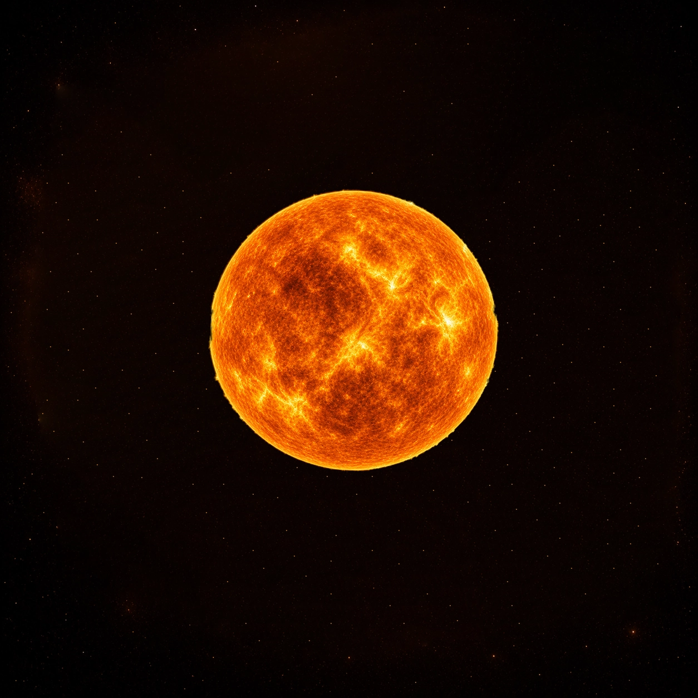
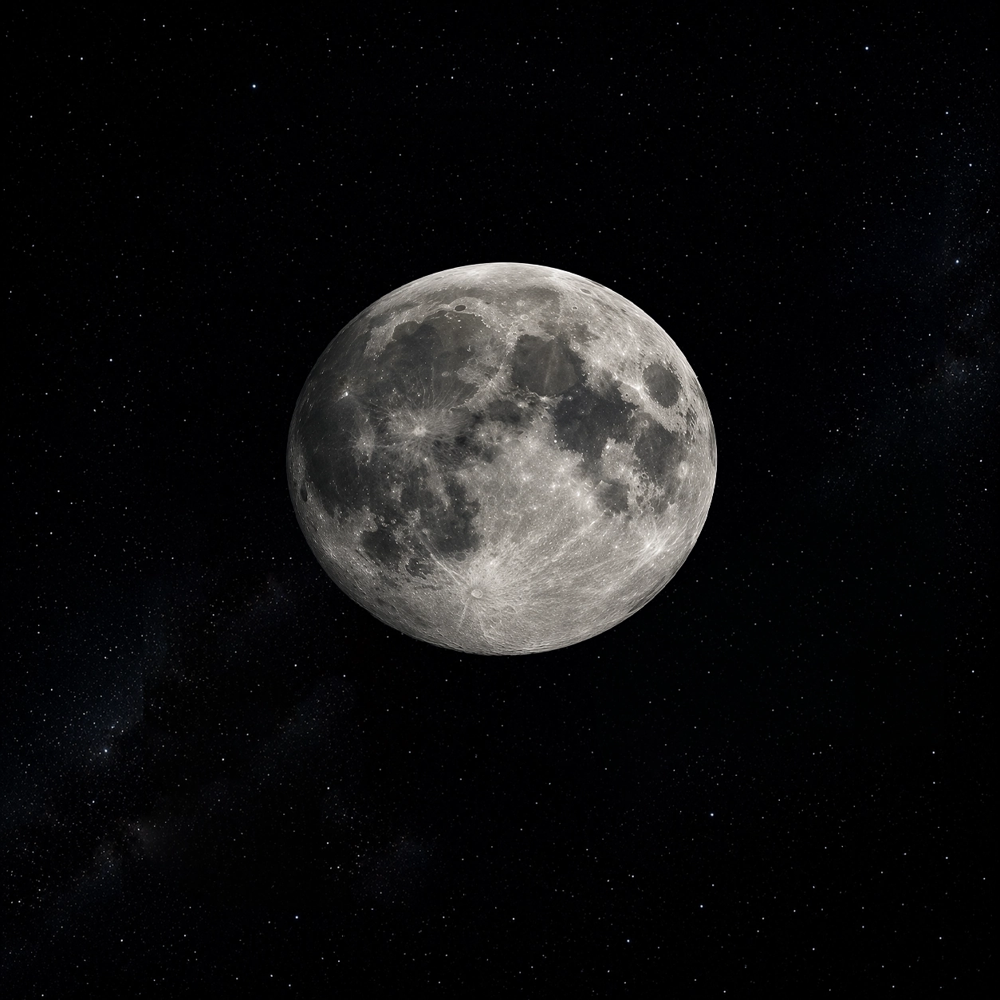
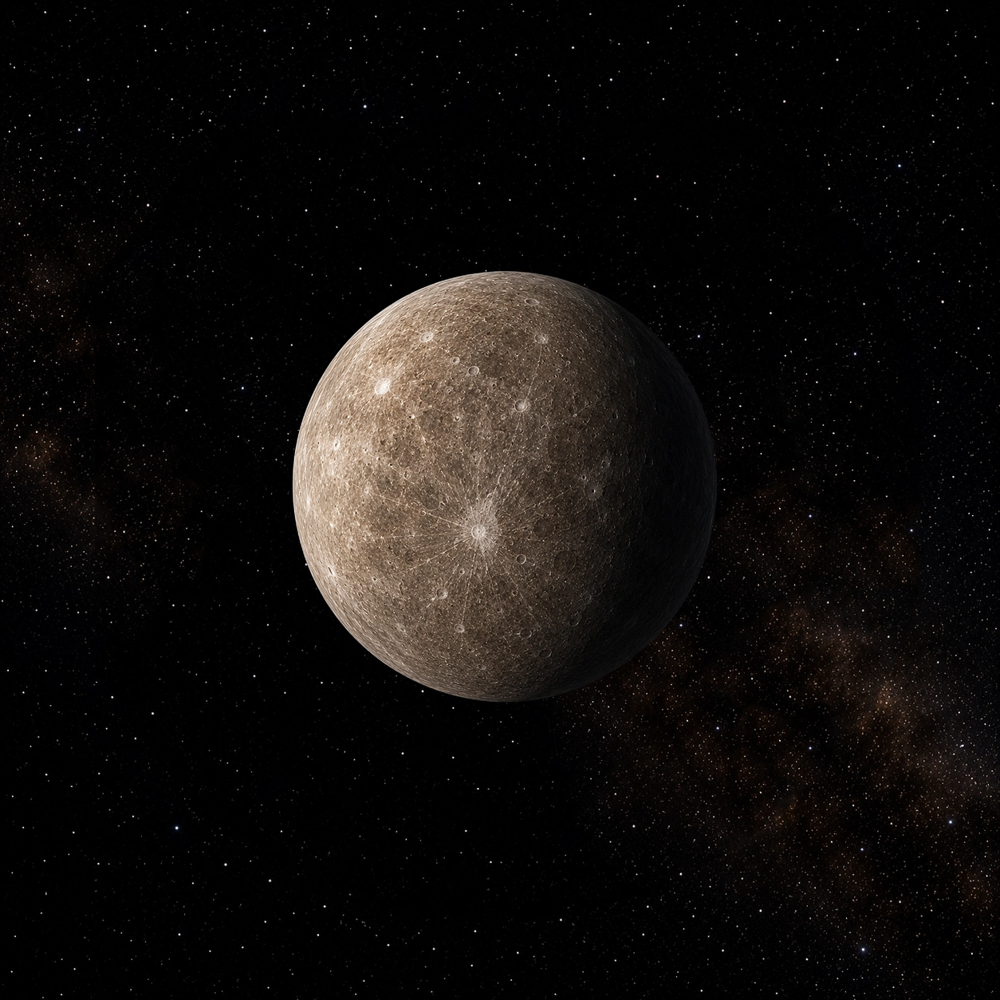
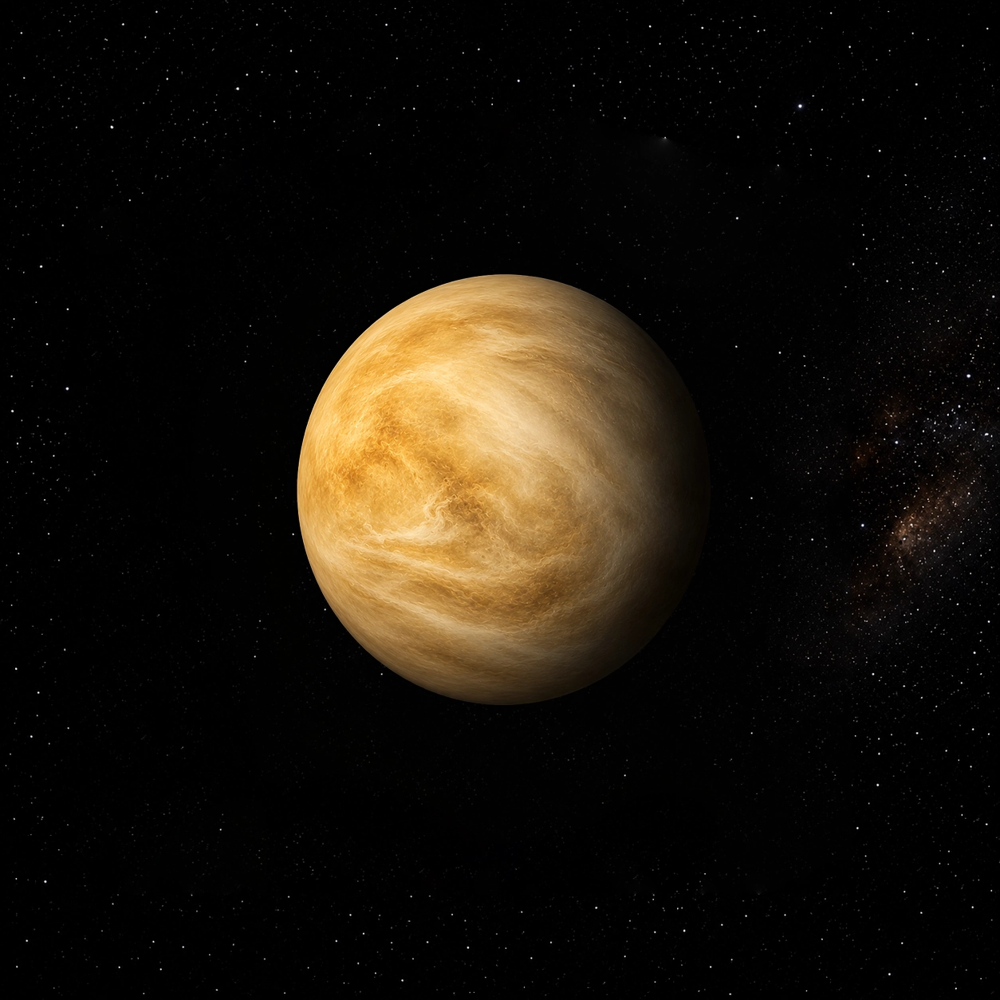
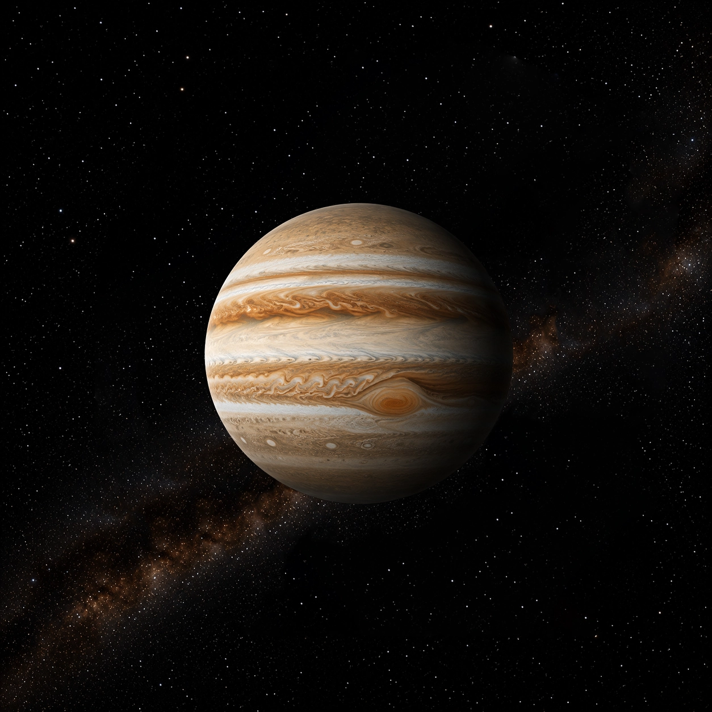
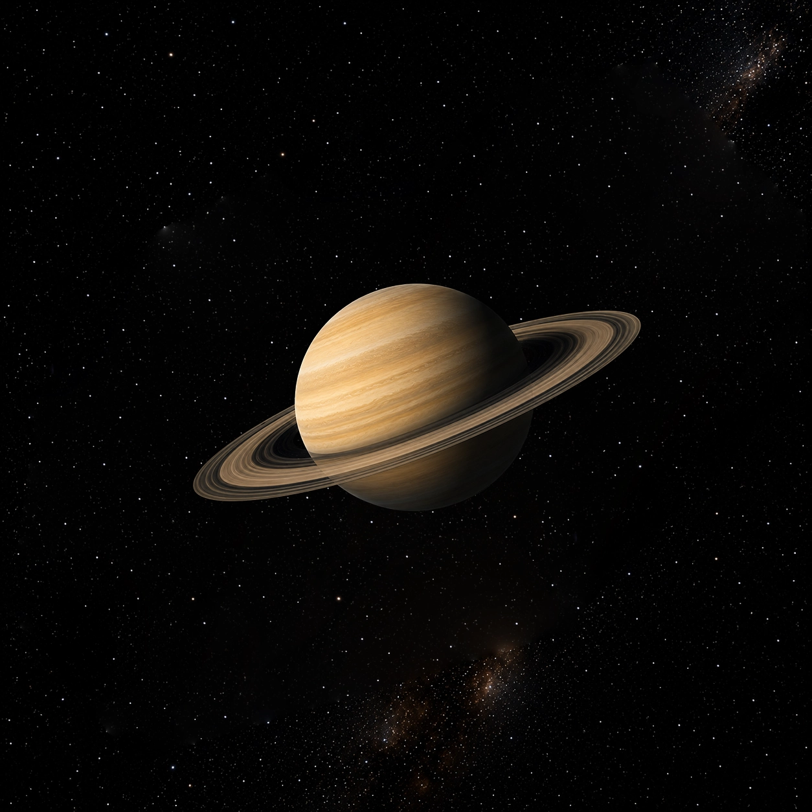
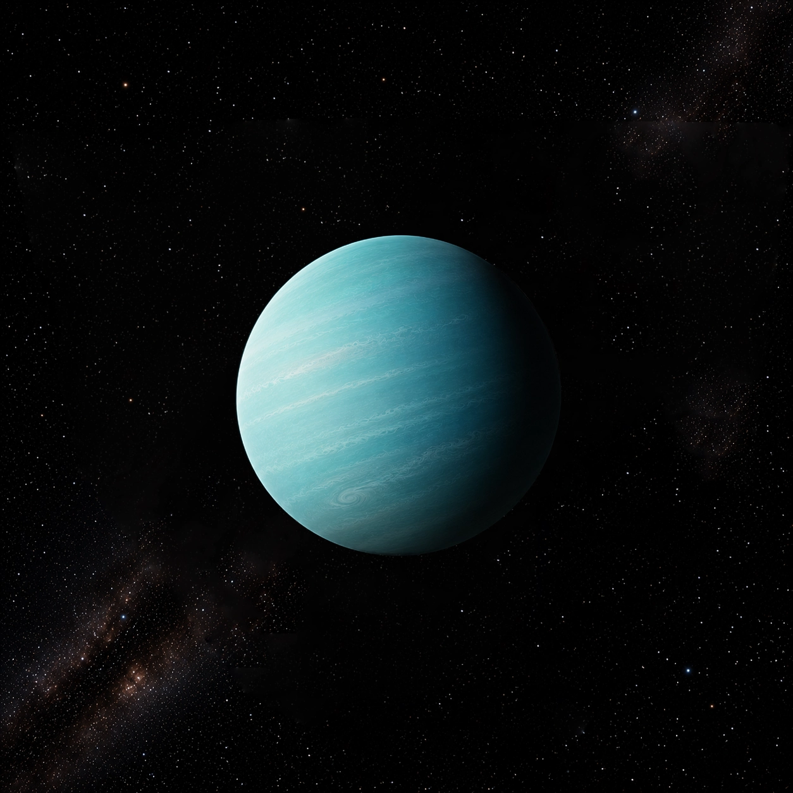
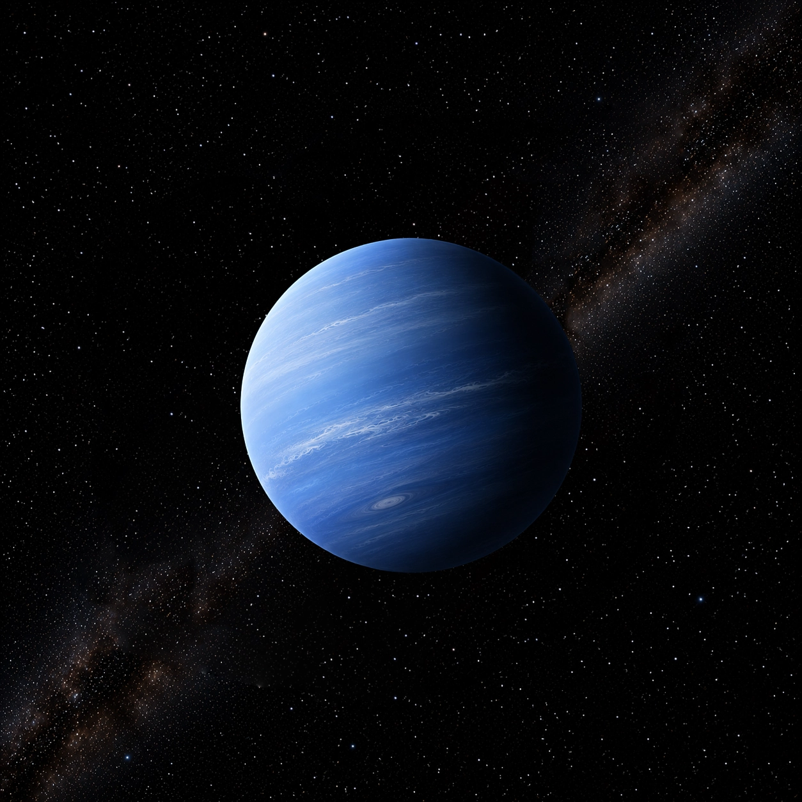
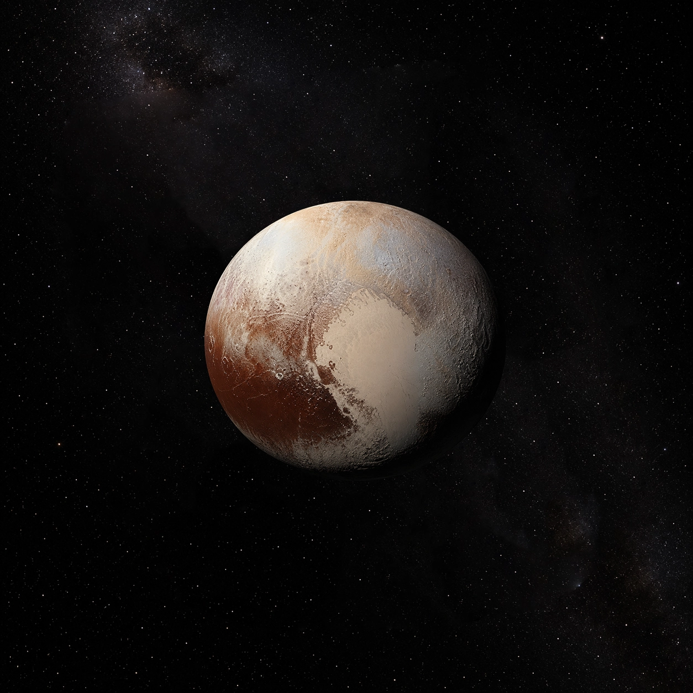

Main Guide
The Foundations of Celestial Astrology
An essential introduction to understanding natal charts, planetary motions, and cosmic energetic influences.
Unlock the secrets of the stars through our celestial guides
An essential introduction to understanding natal charts, planetary motions, and cosmic energetic influences.
Traits, elemental energy, and spiritual path of the Ram.
Sensual appreciation, stability, and material mastery.
Intellectual agility, curiosity, and dual perception.
Intuitive depth, ancestral protection, and lunar wisdom.
Creative passion, royal heart energy, and solar vitality.
Precision, analytical power, and sacred order.
Harmony, relational alchemy, and inner balance.
Transformation, emotional power, and hidden truths.
Philosophical expansion, freedom, and optimism.
Disciplined ambition, legacy, and structural mastery.
Visionary innovation, collective focus, and electric mind.
Universal empathy, artistic dreams, and cosmic unity.

PlanetCore identity, vitality, conscious spirit, and ego purpose.

PlanetInner realm, subconscious patterns, and emotional needs.

PlanetIntellectual processing, communication, and learning styles.

PlanetAttraction, aesthetic values, relationships, and harmony.
Drive, ambition, physical energy, and protective instincts.

PlanetExpansion, higher learning, fortune, and philosophy.

PlanetDiscipline, karmic lessons, structure, and endurance.

PlanetBreakthroughs, individuality, intuition, and awakening.

PlanetDreams, mysticism, spiritual connection, and inspiration.

PlanetRebirth, shadow work, evolution, and psychological depth.